임상심리사-1급 (2009-08-30 기출문제)
1과목: 임상심리연구방법론
1. 다음 중 분산분석에 대한 설명으로 틀린 것은?
- 각 표본은 상호독립적이어야 한다.
- 각 모집단의 분산은 등분산성을 가정하고 있다.
- 분산분석은 독립변수가 하나이상이고 종속변수가 하나인 경우에 시행되는 통계분석이다.
- 분산분석에서 F값의 산출은 집단간 편차자승합에 대한 집단내 편차자승 평균의 비로 나타낸다.
(정답률: 알수없음)

2. 회귀분석에서 종속변수를 효율적으로 설명하는 모형을 찾기 위하여 사용되는 방법이 아닌 것은?
- 순차변수추가법(forward selection)
- 역차변수추가법(backward selection)
- 순차변수제거법(backward elimination)
- 단계별변수선택법(stepwise selection)
(정답률: 알수없음)
3. 다음 중 두 집단 간의 평균차이에 대한 통계적 검증력에 영향을 미치는 요인과 가장 거리가 먼 것은?
- 표본크기
- 제1종 오류의 확률
- 두 집단 평균 간의 실제 차이
- 표집방법
(정답률: 알수없음)
4. 다음 중 표본의 크기를 결정하는 요인과 가장 거리가 먼 것은?(오류 신고가 접수된 문제입니다. 반드시 정답과 해설을 확인하시기 바랍니다.)
- 조사목적
- 조사비용
- 분석기법
- 집단법 통계치의 필요성
(정답률: 알수없음)
5. 다음 중 요인설계에 대한 설명으로 틀린 것은?
- t검증이나 일원변량분석보다 상대적으로 적은 수의 피험자를 이용해 동일한 질문에 답할 수 있다.
- 주효과를 확인할 수 있다.
- 상호작용 효과를 확인할 수 있다.
- 종속변인이 두 개 이상인 설계이다.
(정답률: 알수없음)
6. 척도제작시 요인분석(factor analysis)이 활용되는 경우로 틀린 것은?
- 척도의 구성요인 확인
- 문항들 간의 관련성 분석
- 척도의 신뢰도 계수 산출
- 척도의 단일 차원성에 대한 검증
(정답률: 알수없음)
7. 어떤 연구에서 “미국의 도시 중 동양인의 비율이 높은 도시가 동양인의 비율이 낮은 도시보다 정신질환 발병률이 높다”는 결과를 얻었을 때, 이러한 연구결과로부터 “백인 정신질환자보다 동양인 정신질환자가 더 많다”고 결론을 내리는 오류를 무엇이라고 하는가?
- 조건화 오류
- 생태학적 오류
- 개인주의적 오류
- 일반화 오류
(정답률: 알수없음)
8. 다음은 조사연구를 설계하고 진행할 때 거쳐야하는 일반적인 절차를 무선적으로 나열해 놓은 것이다. 다음 중 이러한 절차들을 올바른 순서로 재배열한 것은?
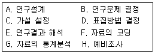
- C→B→A→D→F→H→E→G
- C→B→D→A→H→F→E→G
- B→C→A→D→H→F→G→E
- B→C→D→A→F→H→G→E
(정답률: 90%)
9. 실험설계에서 조사대상자들이 동일한 조사를 반복해서 받게 되면, 두 번째 또는 세 번째 조사에서는 가능한 첫 번째 조사 당시에 응답한 내용과 조금이라도 차이가 나는 응답을 하려는 경향이 짙게 되는 효과는?
- 성숙효과
- 실험효과
- 선별효과
- 조사도구효과
(정답률: 알수없음)
10. 대도시 학생의 ADHD 가능성을 알아보기 위한 연구가 시작되었다. 표집방법은 군집표집법(cluster sampling)을 사용하였다. 다음 중 무선표집 순서로 가장 적합한 것은?
- 대도시→학군→학교→학급→학생
- 학생→학급→학교→학군→대도시
- 대도시→학생→학급→학교→학군
- 학교→학급→학생→대도시→학군
(정답률: 알수없음)
11. 다음 ( )안에 들어갈 알맞은 것은?
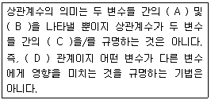
- A-관련성, B-방향성, C-인과관계, D-쌍방향
- A-관련성, B-방향성, C-상관관계, D-단방향
- A-상관관계, B-종속성, C-인과관계, D-상방향
- A-상관관계, B-방향성, C-종속성, D-단방향
(정답률: 알수없음)
12. 리커트 척도구성기법의 신뢰성을 검증하는 방법으로 틀린 것은?
- 총점이 정규분포를 이루는가 살펴본다.
- 각 항목의 점수와 총점의 상관계수를 산출한다.
- 크론바하 알파값을 산출하여 문항들의 내적일관성을 검증한다.
- 전체문항을 두 개의 조로 나눈 다음 각 조건의 상관계수를 산출한다.
(정답률: 알수없음)
13. 다음 중 산술평균의 특징에 관한 설명으로 틀린 것은?
- 통계절차에 필요한 대수적 연산이 가능하다.
- 표본이 클 때 극단의 점수에 의해 크게 영향을 받기 때문에 수집된 자료의 대표성을 상실할 우려가 있다.
- 추리 통계에서 산술평균은 다른 중심집중경향치에 비해서 표집 오차가 작아서 안정성(stability)이 있다.
- 측정수준이 등간이거나 비율척도가 되어야 산출된 평균치는 의미를 갖게 된다.
(정답률: 알수없음)
14. 외적 타당도를 저해하는 요소에 관한 설명이 아닌 것은?
- 측정도구나 관찰자에 따라 측정이 달라질 수 있다.
- 측정 자체가 실험대상자들의 행동을 변화시킬 수 있다.
- 실험대상자 선정에서 오는 편향과 독립변수 간에 상호 작용이 있을 수 있다.
- 연구의 결과가 일반화될 수 있는가의 여부는 표집뿐만 아니라 생태학적 상황에 의해서도 결정될 수 있다.
(정답률: 알수없음)
15. 다음과 같은 특징을 지닌 연구방법은?
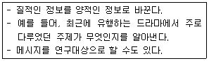
- 투사법
- 내용분석법
- 질적연구법
- 사회성측정법
(정답률: 알수없음)
16. 지수와 척도에 관한 설명으로 틀린 것은?
- 지수와 척도 모두 변수에 대한 서열측정이다.
- 척도점수는 지수점수보다 더 많은 정보를 전달한다.
- 지수와 척도 모두 둘 이상의 자료문항에 기초한 변수의 합성 측정이다.
- 지수는 동일한 변수의 속성들 가운데서 그 강도의 차이를 이용하여 구별되는 응답 유형을 밝혀낸다.
(정답률: 알수없음)
17. 다음 중 표집틀(sampling frame)이 모집단(population)보다 큰 경우는?
- A병원 환자를 환자기록부를 이용해서 표집하는 경우
- A병원 환자를 병원 입구에서 임의로 표집하는 경우
- A병원 환자를 서울지역 휴대폰 가입자 명부를 이용해서 표집하는 경우
- A병원 환자를 무선적 전화걸기(random digit digital)방법으로 표집하는 경우
(정답률: 알수없음)
18. 가설점정에 있어서 연구자가 범할 수 있는 제2종 오류(Type ll error)는 어떤 경우에 발생하는가?
- 영가설이 참일 때 영가설을 수용하는 경우
- 영가설이 거짓일 때 영가설을 수용하는 경우
- 영가설이 참일 때 영가설을 기각하는 경우
- 영가설이 거짓일 때 영가설을 기각하는 경우
(정답률: 알수없음)
19. 다음 ( )안에 들어갈 알맞은 것은?
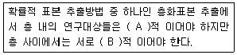
- A - 동질, B - 이질
- A - 정, B - 동
- A - 이질, B - 동질
- A - 동, B - 정
(정답률: 알수없음)
20. 다음 중 통계적 추론에서 추정에 대한 설명으로 틀린 것은?
- 통계적 추정이란 표본에서 얻은 통계량을 이용하여 모집단의 모수를 추정하는 것이다.
- 기술통계학도 엄격히 말하면 추리통계적 요소를 가지고 있다고 할 수 있다.
- 모수를 추정하기 위한 통계량을 추정치(estimate)라고 하고 표본조사의 결과로 얻은 추정치의 측정값을 추정량(estimator) 이라고 한다.
- 기술통계학은 그 자신이 모수가 되는 거이고 추리통계학은 그 자신이 모수가 되기 어려운 표본에서 모수를 추정하는 것이다.
(정답률: 알수없음)
2과목: 고급이상심리학
21. 다음 중 알코올 사용장애에 관한 설명으로 틀린 것은?
- 임산부의 과도한 음주는 태아알코올 증후군을 초래할 수 있다.
- 역조건 형성의 원리를 이용한 혐오치료가 알코올 사용장애의 치료에 활용된다.
- 아시아와 라틴 문화권에서 남자의 알코올 사용장애의 비율이 여자보다 더 높다.
- 지속적인 알코올 섭취는 말초신경계를 파괴시켜 코르사코프 증후군을 유발할 수 있다.
(정답률: 알수없음)
22. 정신분열증 약물 치료에 관한 설명으로 틀린 것은?
- 진정성 항정신병 약물은 환각이나 망상 등의 양성증상을 억제하며 추체외로 부작용이 가장 적다.
- 양성증상은 약물 치료에 의해 쉽게 호전되나 음성 증상은 쉽게 호전되지 않는다.
- 정신불열 증상을 최대한 억제하는 동시에 긍정적 적응 기능의 손상과 약물의 부작용을 최소화해야 한다.
- 약물 치료로 증상이 호전되지 않을 경우 전기충격 치료를 시행해 볼 수 있다.
(정답률: 알수없음)
23. 다음 중 범불안장애의 원인에 관한 설명으로 틀린 것은?
- 정신분석 입장에서 볼 때 의식적 갈등이 주요 원인이나 방어기제에 의해 변형되므로 환자 자신은 불안의 이유를 자각하기 어렵다.
- 범불안장애는 여러 가지 사소한 자극에 대해 경미한 불안반응이 조건형성되어 나타나는 다중 공포증이다.
- 현재 불안과 관련된 신경전달물질로 알려진 것은 GABA, Norepinephrine, Glutamate 등이다.
- 범불안장애를 지닌 사람은 불확실성에 대한 인내력이 부족하며 파국적인 결과를 예상하는 인지적 특성을 지니고 있다.
(정답률: 알수없음)
24. 공황발작의 인지모델에 대한 설명으로 틀린 것은?
- Clark는 위험지각이 걱정과 염려, 신체감각 고양, 파국적 해석으로 이어지고 이것이 다시 위험지각을 증폭시킨다는 공황발작 인지모형을 주장하였다.
- Beck은 불안장애 환자들이 과민한 경계체계를 가지고 있는 것으로 생각하고 신체 내부의 감각에 지나치게 집중한다고 생각하였다.
- 불안민감성이 높지 않은 사람들은 공황이 시작되는 시점에 이를 깨닫지 못하므로 심한 발작에까지 이르는 경우가 더 많다.
- 공황장애 환자들은 정보처리과정에서 공황발작과 관련된 위협자극에 대한 선택적 주의를 하기 때문에 이를 더 심각하게 지각하는 경향이 있다.
(정답률: 알수없음)
25. 다음 중 여성일 확률이 가장 높은 사람은?
- 소아기 붕괴성 장애를 진단받은 사람
- 레트장애를 진단받은 사람
- 신경성 식욕부진증을 진단받은 사람
- 경계선 성격장애를 진단받은 사람
(정답률: 알수없음)
26. 다음 중 물질 관련 장애에 대한 설명으로 옳은 것은?
- 물질의존을 진단 내리기 위해서는 내성과 금단 두 가지 증상이 필수적으로 존재해야 한다.
- 물질의좀은 해당 장애가 12개월 이상, 물질 남용은 해당 장애가 6개월 이상 지속될 때 진단 내린다.
- 니코틴의 경우 의존 진단은 가능하지만, 중독이나 남용은 진단 내리지 않는다.
- 동일군의 물질에 대해 물질남용과 물질 의존을 함께 진단 내릴 수 있다.
(정답률: 알수없음)
27. 다음 중 성격장애의 명칭과 핵심 신념이 바르게 짝지어진 것은?
- 편집성 성격장애 - 타인은 착취하는 존재이다. 따라서 나도 앙갚음으로 그들을 착취한다.
- 자기애적 성격장애 - 나는 타인에게 상처받기 쉽다.
- 히스테리성 성격장애 - 가까운 관계는 이득이 없고 혼란스럽다.
- 강박적 성격장애 - 나는 기본적으로 조직적이지 못하다.
(정답률: 알수없음)
28. 다음 사례와 가장 관계 깊은 장애는?
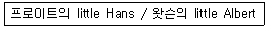
- 공황장애
- 주요우울장애
- 강박장애
- 공포증
(정답률: 90%)
29. 다음 중 학습장애의 진단을 내릴 수 없는 사람을 모두 고른 것은?
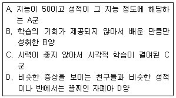
- A, B
- B, C
- A, C, D
- A, B, C, D
(정답률: 알수없음)
30. 다음 중 회피성 인격장애에 대한 설명으로 옳은 것은?
- 핵심문제는 수치심이다.
- 대인관계에 무관심하다.
- 부모의 학대, 방임과 관련될 수 있다.
- 분열성 인경장애와 연속선상에 위치한다.
(정답률: 알수없음)
31. 다음 중 주요 우울증 삽화로 진단하기 위한 가능성을 높이는 상황이 아닌 것은?
- 소아와 청소년의 과민한 기분
- 거의 매일 나타나는 불면이나 과다수면
- 3개월 전에 경험한 사별 이후 지속되는 반복되는 죽음에 대한 생각
- 병이 있는 것에 대한 자책이나 죄책감
(정답률: 알수없음)
32. 다음 사례에서 A씨에게 의심되는 질환으로 가장 적합한 것은?
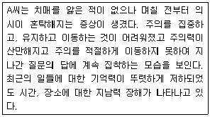
- 기억상실장애(amnestic disorder)
- 혼수(coma)
- Ganser 증후군
- 섬망(delirium)
(정답률: 알수없음)
33. 신경성 식욕부진증에 대한 설명으로 가장 적합하지 않은 것은?
- 폭식과 하제의 사용이 동반될 경우 진단내릴 수 없다.
- 체중과 체형을 인식하는 방식이 왜곡되어 있다.
- 체중과 체형이 자기평가에 과도하게 영향을 미친다.
- 발병사례 중 사망률이 5~15%로 예측된다.
(정답률: 알수없음)
34. 다음 중 성정체감 장애에 대한 설명으로 틀린 것은?
- 심리치료는 성정체감 장애에 대해 가장 효과적인 치료방법이다.
- 반대 성(性)에 대한 동일시가 성인기 초기에 들어와서 뚜렷하게 나타나는 경우는 어린 시절에 나타나는 경우 보다 반대 성에 대한 동일시가 불안정하며 안성화되는 경향도 약하다.
- Freud는 성정체감 장애를 남근기에 고착된 현상으로 설명하고 있는데, 즉 이성의 부모를 과도하게 동일시하게 되면 이후에 성정체감 장애가 생긴다고 보았다.
- 동성애와는 구분되는 장애이다.
(정답률: 알수없음)
35. 다음 중 이상행동의 준거에 대한 설명으로 틀린 것은?
- 객관적 증상 이외에 본인의 주관적 불편감이 중요 기준이 될 수 있다.
- 사회적 기준은 문화와 시대가 변화하여도 동일하게 적용 가능하다.
- 심리검사를 통해 이상을 평가하는 것은 통계적 기준과 깊은 관련이 있다.
- 주관적 기준의 문제점 중 하나는 병식이 없는 사람에 대한 진단이다.
(정답률: 알수없음)
36. 다음은 무엇에 관한 설명인가?
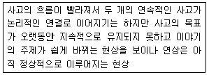
- 사고의 비약(flight of idea)
- 우원적 사고(circumstantial thinking)
- 신어조작증(neologism)
- 보속증(perseveration)
(정답률: 알수없음)
37. 다음 중 이상심리학의 역사에 관한 설명으로 틀린 것은?
- 고대의 원시사회에서는 정신장애를 초자연적인 현상으로 이해하여 초자연적인 치료 방법을 사용하였다
- 그리스 시대의 Hippocrates는 정신장애를 심리적 요인의 불균형에 의해 생긴 것으로 보고 조증, 우울증, 광증으로 분류하였다.
- 서양 중세 시대의 정신병자는 죄를 지어 하나님으로부터 벌을 받는 것이거나 마귀의 수족 역할을 하는 자로 규정되었다.
- 내과 의사였던 Pinel은 정신병자에게 인도주의적인 대우를 해 주어야 한다고 주장한 최초의 사람이다.
(정답률: 알수없음)
38. 다음 중 노인 우울증의 특징에 대한 설명으로 옳은 것은?
- 젊은 연령층과는 달리 남녀 유병율이 비슷하다.
- 신체증상, 건강염려증적 호소, 죄책감이 빈번하다.
- 기억을 효율적으로 인출하는 능력의 저하가 흔하다.
- 조발성(early onset)보다 만발성(late onset)에서 우울증 가족력이 높다.
(정답률: 알수없음)
39. 다음 성장애 중 절정감 장애에 해당하는 것은?
- 성욕감퇴장애
- 남성발기장애
- 질경련증
- 조루증
(정답률: 80%)
40. 인간행동의 습득과정을 설명하고, 그것을 바탕으로 하여 변용을 시도하였으며 모델링 형성과정과 1차적 추동, 2차적 추동을 중요시한 이론적 모델은?
- 정신분석적 모델
- 생리학적 모델
- 행동주의 모델
- 실존주의적 모델
(정답률: 알수없음)
3과목: 고급심리검사
41. Korean Kaufman Assessment Battery for Children에서 검사자의 부주의로 어떤 하위검사를 실시하지 않았거나 검사 중에 예기치 못한 일이 발생하여 채점이 불가능하게 되었다. 또한 부득이한 이유로 특정 하위검사를 실시할 수 없는 상황이 벌어져 동상적인 방법으로 종합척도의 표준점수를 계산할 수 없을 때가 있다. 이때는 비례추정법을 사용하여 문제가 생긴 하위검사를 추정할 수 있는 데, 비례추정법의 사용이 불가능한 종합척도는?
- 순차처리척도
- 동시처리척도
- 비언어성 처리척도
- 습득도 척도
(정답률: 알수없음)
42. MMPI-2의 3개의 척도로 구성된 상승척도에 따라 일반적으로 진단되는 장애가 바르게 짝지어진 것은?
- 1-3-8 : 신체형 장애
- 1-3-9 : 편집형 정신분열증
- 2-4-7 : 수동공격성 성격장애
- 6-8-7 : 강박적 성격장애
(정답률: 알수없음)
43. 다음 중 시공간 지각 및 구성능력을 측정하는 신경심리검사가 아닌 것은?
- Block Design Test
- Stroop Test
- BGT
- Rey-Osterrieth Complex Figure Test
(정답률: 알수없음)
44. 다음 중 인지행동적 면담에서 강조하는 내용으로 가장 적합한 것은?
- 현재의 정신병력 파악
- 집단적 체계에 따른 진단과 합리적 치료계획 수립
- 문제행동의 선행요소와 반응결과에 영향을 주는 요인분석
- 내담자의 아동기 영향력 있는 사람들과의 정서적 상호작용
(정답률: 알수없음)
45. 다음 중 뇌졸중(stroke)으로 심한 언어장애를 보이고 있는 60대 환자의 지적 능력을 평가할 수 있는 가장 적합한 검사는?
- Trail Making Test
- Wechsler Memory Scale
- Raven Progressive Matrices
- Rey Complex Figure Test
(정답률: 알수없음)
46. 비구족적 면담에 대한 설명으로 틀린 것은?
- 내담자의 상태나 상황에 따라 면담의 절차나 형식이 달라질 수 있다.
- 비구조적 면담을 통해 유용한 정보를 얻기 위해서는 임상가로서 상당한 정도의 숙련성이 요구된다.
- 많은 정보를 수집하기 어려울 뿐만 아니라 수집된 자료를 객관적으로 수량화하기가 어렵다.
- 면담과정에서 내담자의 자발성이 억제되기 때문에 연구목적으로 흔히 사용된다.
(정답률: 알수없음)
47. A군(만 7세)은 수업 도중 집중하지 못하고 떠들거나 일어나 돌아다니고 주변 친구들이 싫어하는데도 툭툭치고 장난을 거는 등의 행동으로, 담임교사에게 여러 번 지적을 받았으나 변화가 없었다. A군의 문제를 평가하기 위해 가장 적합한 검사 배터리 구성은?
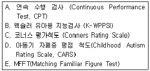
- A, B, D
- B, C, E
- A, C, D, E
- A, B, C, E
(정답률: 알수없음)
48. 다음 중 임상심리 검사의 해석과 관련된 윤리적 지침에 관한 설명으로 가장 적합한 것은?
- 임상가는 특정한 해석을 뒷받침할만한 증거가 없는 경우 임상적 경험을 바탕으로 해석한다.
- 임상가는 환자에게 검사 결과에 대한 해석뿐만 아니라 환자에게 도움이 된다고 판단될 경우 해석 오류의 가능성에 대한 정보도 알려주어야 한다.
- 컴퓨터를 이용한 검사에서는 자극조건이 동일하기 때문에 특별히 검사 환경을 고려할 필요가 없다.
- 장애를 가진 수검자와 일반 수검자의 기능을 비교하는 것이 검사의 주목적일 때 일반규준보다 특수규준을 사용한다.
(정답률: 알수없음)
49. 어떤 지능검사와 측정의 표준오차가 7점일 때, 지능검사 점수가 90점이라면 95% 신뢰구간에서 실제 지능 지수의 범위는 약 얼마로 추정할 수 있는가?
- 86.5 ~ 93.5
- 83 ~ 97
- 76 ~ 104
- 72 ~ 108
(정답률: 알수없음)
50. 한국판 웩슬러 아동용 지능 검사 3판(K-WSIC-III)에 대한 설명으로 옳은 것은?
- 동형 찾기와 미로는 보충ㆍ소검사이지만 처리 속도 지표를 산출하기 위해서는 실시해야 한다.
- 차례맞추기의 경우, 모든 연령의 피검사에게 시범 문항을 실시한다.
- 빠진곳 찾기를 실시하지 못 했다면, 전체 IQ산출에 동형 찾기 소검사 점수로 대치할 수 있다.
- 토막짜기의 문항 2에서는 소책자의 그림을 제시하고 검사자가 먼저 시범을 보인다.
(정답률: 알수없음)
51. Cattell-Horn이 제안한 유동-결정 지능 모형에 대한 설명으로 틀린 것은?
- 사고로 뇌 손상을 당한 경우 대개 유동 지능 보다 결정 지능이 더 큰 영향을 받는다.
- 결정 지능은 환경과 경험으로 결정될 가능성이 크다.
- 결정 지능은 유동 지능이 경험을 통해 결정된 지능이기 때문에 두 지능은 서로 상관이 있다.
- 유동 지능은 선천적으로 타고나고 문화나 환경에 따라 변화되지 않는 일반적인 지적 능력이다.
(정답률: 알수없음)
52. 다음 중 적성검사의 기능과 가장 거리가 먼 것은?
- 적성검사는 지능과 유사하게 개인이 가지고 있는 일반적인 능력이나 그 능력의 발현 가능성을 평가한다.
- 적성검사는 개인이 직업에서 얼마만큼 그 직무를 성공적으로 수행할 수 있을지를 예측하게 해준다.
- 일반적으로 적성은 타고난 능력이나 소질이라고 알려져 있는 바와 같이 유전적 성향이 강하다.
- 적성검사는 어떤 과제나 임무를 수행하는데 있어서 개인에게 요구되는 특수한 능력을 평가하는 것이다.
(정답률: 알수없음)
53. 다음 중 MMPI-2 타당도 척도의 해석에 대한 설명으로 옳은 것을 모두 고른 것은?
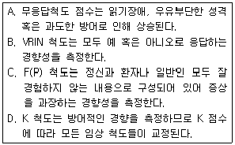
- A, B
- B, C
- A, C
- B, D
(정답률: 알수없음)
54. 심리평가 보고서 작성에 관한 설명으로 틀린 것은?
- 보고서 작성 시 검사 자료에 대한 임상가의 해석을 잘 조화 시키고 결론에 대해 합리적인 근거를 제시해야 한다.
- 보고서는 내용을 잘못 이용할 소지가 있기 때문에 현학적인 전문 용어를 중심으로 작성해야 한다.
- 보고서는 의뢰자가 알고 있는 바와 전혀 모르는 바를 연결시키는 중간 구성개념을 도입하는 것이 유용하다.
- 보고서는 문장의 길이를 짧게 하고, 단락을 구분하되 한 문단 내에서는 하나의 개념에 초점을 맞추는 것이 좋다.
(정답률: 알수없음)
55. 대졸 학력이며 은퇴 전 은행장까지 지냈던 65세 남자가 메모를 하지 않으면 약속을 잊어버린다고 호소하여 전반적인 신경심리검사를 실시하였다. 다음에 제시된 결과를 통해 가장 적절한 진단적 해석은?
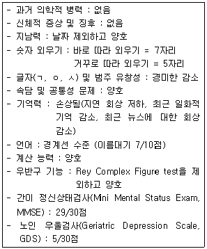
- 정상적인 노화 과정
- 초기 알츠하이머형 치매
- 초기 피질하성 치매
- 가성치매(pseudodementia)
(정답률: 알수없음)
56. WAIS-R의 요인분석에서 확인된 3가지 요인구조는?
- 언어적 이해 능력, 지각적 조작화 능력, 주의 지속능력
- 언어적 개념화 능력, 공간적 능력, 획득된 지식
- 결정적 지능, 유동적 지능, 시각-운동 통합 능력
- 기억능력, 개념형성 능력, 시각-통합운동 능력
(정답률: 알수없음)
57. 외상성 뇌 손상 환자의 신경심리평가에 대한 설명으로 틀린 것은?
- 평가의 초점은 뇌손상 여부를 평가하는 것이다.
- 결손의 증거를 발견하는데 실패하였더라도 이것이 결손이 없다는 것을 의미하지는 않는다.
- 병전 적응능력, 병전 지능과 관련된 교육 직업 수준에 대한 정보 또한 중요하다.
- 두부 손상의 정도는 Glasgow Coma Scale이나 외상후 기억상실 기간으로 평가할 수 있다.
(정답률: 알수없음)
58. 검사의 신뢰도 및 타당도에 대한 설명으로 틀린 것은?
- 반분신뢰도는 속도검사에는 적합하지 못한 방법이다.
- 검사-재검사 신뢰도는 시간 경과에 따른 검사 결과의 안정성을 측정한다.
- 내용타당도는 능력검사보다 성격검사나 적성검사에서 더 중요하게 다루어 진다.
- 동형검사 신뢰도가 낮은 것은 두 검사가 동일한 특성이나 기술을 측정하고 있지 못함을 의미한다.
(정답률: 알수없음)
59. 학습장애가 있는 것으로의심되는 10세 아동에게 연속수행검사를 실시한 결과 반응속도가 느리고, 누락오류가 많았으며 오경보 오류는 정상범위에 해당하였다. 이때 생각할 수 잇는 심리장애가 아닌 것은?
- 정신지체
- 주의력결핍 과잉행동장애-부주의 우세형
- 우울 장애
- 품행 장애
(정답률: 알수없음)
60. 다음 중 아동의 각성수준과 충동성, 주의 유지력 등 주의력과 충동성을 직접적으로 측정할 수 있는 수행검사가 아닌 것은?
- 한국판 코너스 평정척도
- 연속수행검사(CPT)
- 주의력장애 진단시스템(ADS)
- TOVA
(정답률: 알수없음)
4과목: 고급임상심리학
61. 임상심리학자의 윤리적 원칙과 이를 해결하기 위한 주요 접근법으로 가장 적절한 것은?
- 내담자의 궁극적인 치료 효과를 위하여 필요한 경우 치료자의 신분이나 치료적 접근을 위장하는 것이 필요하다.
- 치료 관계에서의 비밀 유지 원칙은 가장 필수적이고 기본적인 요소로서 법에 의해 정해진 경우가 아니라면 어떠한 내담자나 환자라도 이 원칙을 엄수해야만 한다.
- 치료자도 전문인인 동시에 한 개인이다. 따라서 자신의 역전이에 항상 관심을 기울이고 이를 통하여 부정적인 치료 효과를 초래하는 일이 없도록 하여야 한다.
- 치료자가 동시에 지도 교수나 사업동료 등의 다른 역할을 알고 있는 경우 전문적 관계뿐 아니라 개인적 관계도 적절하게 유지하여 각각의 역할 간의 균형을 유지하는 것이 필요하다.
(정답률: 알수없음)
62. 다음 중 성격개념에 대한 이론적 가정이 다른 것은?
- 캘리포니아 인성검사(California Personality Inventory)
- 16 성격 요인검사(16 Personality Factors Test)
- 5요인 성격검사
- 마이어 브릭스 유형지표 (MBTI: Meyer Briggs Type Indicator)
(정답률: 알수없음)
63. 심리치료의 초기발전에 기여한 인물과 활동이 바르게 짝지어지지 않은 것은?
- Freud - 정신분석은 의학의 전문분야가 아님을 주장했다.
- Dollard와 Miller - 정신분석 개념과 행동주의 이론의 통합 모색했다.
- Carl Rogers - 심리치료 과정과 결과에 대한 체계적이고 경험적인 연구를 개발했다.
- Arnold Lazarus - 치료의 대부분은 엄밀히 행동주의적인 것으로 설명될 수 있음을 주장했다.
(정답률: 알수없음)
64. 다음 중 신경심리학에 관한 설명으로 틀린 것은?
- 신경심리학이란 두뇌 기능과 행동 간 관련성에 대한 연구이다.
- 두뇌 손상을 일으키는 원인으로는 외상, 독성물질, 퇴행성 질환과 성격장애가 있다.
- 현대 임상신경심리학자는 검사 배터리를 융통성 있게 채택하여 평가한다.
- 신경심리학자들은 진단, 회복의 예후, 개입과 재활에서 주요 역할을 감당한다.
(정답률: 알수없음)
65. 다음 중 심리치료를 종결해야 할 상황과 가장 거리가 먼 것은?
- 치료과정에서 역전이가 나타날 경우
- 환자가 다른 지역으로 이사하여 지속적인 치료를 받기가 어려운 경우
- 치료자가 충분한 지식이나 경험, 기술이 부족하여 더 이상 치료적 관계를 지속할 수 없다고 판단한 경우
- 치료자와 내담자가 최선의 노력을 했지만 더 이상 진전이 없는 고원상태가 지속될 경우
(정답률: 알수없음)
66. 1차 세계대전과 2차 세계대전 사이의 임상심리학의 발전영상에 관한 설명으로 옳은 것은?
- Rorschach, TAT, DAP 등 주요 투사법 검사가 개발 되었다.
- 미국의 경우 대다수의 임상심리학자들이 공식적인 수련 프로그램을 통해 석사 및 박사 학위를 소지하였다.
- 미국의 경우 행동수정기법 이외에 분석적 심리치료도 임상심리학자들이 실시하였다.
- 집단지능검사로서 비영어권용 아미-알파(army-α)와 영어권용 아미-베타(army-β)가 개발되었다.
(정답률: 알수없음)
67. 다음 중 자각이 되지는 않으나 타인과의 의사소통은 가능한 수준의 행위에 가장 적합한 평가 방법은?
- 질문지법
- 관찰법
- 자기감찰법
- 과제수행법
(정답률: 70%)
68. 다음 중 강박장애환자를 치료하는데 가장 적합한 것으로 경험적으로 타당화된 치료기법은?
- 행동조형기법과 홍수요법
- 노출과 반응방지치료
- 자기주장훈련과 체계적 둔감법
- 사회기술훈련과 재활치료
(정답률: 알수없음)
69. 정신질환에 대한 생물학적 접근이 갖는 가장 중요한 장점은?
- 이상행동의 원인을 밝혀 근원적인 치료를 할 수 있다.
- 연구와 치료에서 과학적으로 엄밀한 접근법을 사용함으로써 체계적인 지식을 축적할 수 있다.
- 신체질환을 진단하듯이 정신적 문제를 진단함으로써 진단의 오류를 줄일 수 있다.
- 정신질환이 생물학적 원인에 의해 발병했다고 설명함으로써 환자의 치료동기를 높일 수 있다.
(정답률: 알수없음)
70. MMPI-2의 타당도 척도에서 내용상 서로 반대되는 23개문항쌍으로 구성되어 있고, 이 점수가 높을 때는 무분별하게 그렇다 반응을 하는 경향을 시사하는 척도는?
- F
- TRIN
- VRIN
- Fb
(정답률: 알수없음)
71. 행동평가에서 임상적 판단과 해석을 향상시키는 가장 적절한 방법은?
- 행동평가 시 많은 양의 정보들을 얻게 되므로 적절히 분류하고 단순화시켜야 한다.
- 행동평가는 결국 표본 행동의 획득 및 제한적 정보 수집을 기초로 하기 때문에 핵심 정보들을 중심으로 집중적 의미부여가 필요하다.
- 행동평가의 타당성을 확보하기 위하여 충분한 기록을 하여야 하며 기회가 된다면, 충분한 추후조사를 실시하여 기록에 대한 검증과 확인을 거치는 것이 필요하다.
- 행동평가에서 모든 상황과 환경적 요인을 알 수 없으므로 적절한 추정을 통하여 이를 보완하는 것이 필요하다.
(정답률: 알수없음)
72. 심리평가에 대한 치료적 모델의 특성이 아닌 것은?
- 개별화된 목표를 위해 협력적 작업을 강조한다.
- 환자와 평가자와의 사이에 일어나는 과정 중심적이다.
- 전문지식과 대인관계 기술을 갖춘 전문가에 의해 시행된다.
- 논리적 실증주의 이론에 기초한다.
(정답률: 알수없음)
73. 전문성, 시간, 에너지 또는 심리학적인 민감성이 결핍된 피자문자들이 스스로 그 과제를 행하도록 정보를 찾고, 그 결과의 전달을 강조하는 자문자의 역할은?
- 전문가
- 수련가/교육가
- 진상조사자
- 과정전문가
(정답률: 알수없음)
74. 다음 중 노출치료에 대한 설명으롵 틀린 것은?
- 노출은 가능한 짧아야 한다.
- 노출은 불안을 유발해야 한다.
- 노출은 될 수 있는 한 공포스러운 자극에 주의를 기울이고 그 자극과 관계를 맺도록 노력해야 한다.
- 노출은 공포, 불안이 제거될 때까지 반복되어야 한다.
(정답률: 알수없음)
75. 가까운 미래의 행동 판단 및 임상가가 이미 확보한 개인사 자료와 동일한 상황의 판단 등이 긴밀하게 관계를 갖는 법심리학자의 주요활동 영역은?
- 전문가 증인
- 위험성 예측
- 법정참여 능력
- 양육권 결정
(정답률: 알수없음)
76. 지능평가에 관한 설명으로 틀린 것은?
- 편차 IQ란 개인의 수행 점수를 개인의 연령집단과 비교하여 사출한 지능지수로 비율 IQ상 나이가 증가하는 것에 따라 지능이 낮아지는 것을 보완할 수 있다.
- 인종에 다라서 지능의 집단차가 보이기는 하나 이는 상당한 논쟁의 원인이 되는 결과로 인종 간의 우열로 보기보다는 환경적인 문제로 볼 수도 있다.
- IQ점수와 학업적 성취와의 상관은 0.30 이하로 학업적 성취는 지능 이외의 동기, 교사 기대, 문화적 배경, 부모의 태도 등이 더 영향을 미친다.
- 쌍둥이 연구 등을 통하여 본 지능의 유전적 영향과 환경적 영향의 문제를 고려할 때 유전적 영향도 상당한것으로 인정되며 그 설명변량은 약 50% 정도에 이른다는 결과도 있다.
(정답률: 알수없음)
77. 성인에 대한 진단/평가와 비교할 때 아동을 진단/평가 할 때의 주의사항에 대한 설명으로 가장 적합하지 않은 것은?
- 아동의 경우에는 성인에 비하여 지적인 측면이나 성격적 측면에서 탄력성을 가지고 있기 때문에 향후 발달 가능성이나 범위를 효과적으로 추정하는 것이 중요하다.
- 아동은 스스로를 표현하는 능력이 부족하기 때문에 성인에 비하여 엄격하고 체계화된 구조적 면접 방식을 사용하는 것이 필요하다.
- 아동의 경우에는 정말 환자가 누구인지를 결정하는 것이 힘들며 부모와 같이 아동을 통제하는 대상자들이 진단 및 치료에 참가하는 것이 바람직하다.
- 아동의 경우 구체적이고 세부적인 행동을 통제하고 관리하는 행동적 접근이나 인지행동적 접근들이 유용한 수단으로 적용된다.
(정답률: 알수없음)
78. 변증법적 행동치료의 4가지 기술훈련 방식에 해당하지 않는 것은?
- 고통인내(distress tolerance)
- 행동시연(behavioral rehearsal)
- 마음챙김(mindfulness)
- 감정조절(emotional regulation)
(정답률: 70%)
79. 다음 중 위기면접에서의 면접자 태도로 적합한 것을 모두 고르면?
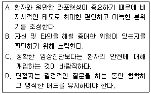
- B, D
- A, B, C
- B, C, D
- A, B, C, D
(정답률: 알수없음)
80. 자기비난적인 내담자를 돕기 위한 합리적 정서행동치료(REBT)의 가정이 아닌 것은?
- 사람은 이성적이고 도덕적인 존재이다.
- 사람은 쉽게 패배적으로 생각하고 느끼고 행동할 수 있다.
- 자기비난을 줄이기 위해서 타고난 창의성을 개발하기 위한 많은 부단한 노력이 필요하다.
- 사람은 자신을 건설적으로 변화시킬 수 있다.
(정답률: 알수없음)
5과목: 고급심리치료
81. 다음 중 현실치료의 기본 입장이 아닌 것은?
- 내담자에게 필요한 사람들과 관계를 맺는 법을 가르쳐 주는 것을 강조한다.
- 치료자는 자기 자신이 됨으로써 내담자들에게 관계를 맺는 법을 가르칠 수 있다.
- 전이는 치료자나 내담자가 현재에 대한 책임을 드러내는 중요한 현상으로 간주한다.
- 내담자에게 의미있는 관계로 향상되지 않는 한 증상 호전은 없기에 증상에는 관심이 적다.
(정답률: 알수없음)
82. 다음 중 성문제 치료의 지침으로 가장 적합하지 않은 것은?
- 치료자는 가능하면 성에 관한 자신의 철학을 치료자로서의 역할과 일치시켜야 한다.
- 치료자는 성에 관한 상담과정에서 자신의 한계를 인식하고 그 한계를 넘어 상담하지 않도록 해야 한다.
- 치료자는 내담자의 위장적 태도에 대처할 수 있어야 한다.
- 치료자는 내담자가 성에 관해 거의 모르는 것으로 가정하는 것이 안전하다.
(정답률: 알수없음)
83. 다음 사례에서 가장 적절한 상담자의 개입은?
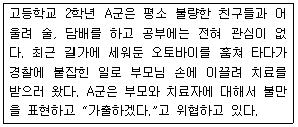
- A군과 부모님이 화해하도록 가족상담을 추진한다.
- 부모의 잘못된 양육방식을 변화시키려고 노력한다.
- A군을 비난하지 않고 가출과 관련된 고민을 충분히 논의한다.
- 불량한 친구들과 어울리지 못하도록 전학을 권유한다.
(정답률: 59%)
84. 심리재활 이론에서 재활모형의 기본개념에 해당되지 않는 것은?
- 핸디캡(handicap)
- 손상(impairment)
- 진단(diagnosis)
- 장애(disability)
(정답률: 알수없음)
85. 알코올중독 상담에서 폐해감소모델의 입장이 아닌 것은?
- 알코올 중독의 일차적 치료목표는 단주이다.
- 내담자가 성취하고 싶은 변화량을 스스로 결정하도록 한다.
- 목적은 개인, 가족 및 지역사회에서 약물 사용과 관련된 문제를 감소시키는 것이다.
- 총체론적 관점에서 자신의 전체 삶과 음주의 역할을 검토하게 한다.
(정답률: 알수없음)
86. 만성 알코올 중독자인 A씨는 치료를 받지 않으면 이혼을 하겠다면서 자신을 입원시킨 부인과 자녀를 원망하고 치료의 필요성을 인정하지 않는다. A씨처럼 인식전단계(precontemplation stage)에 있는 내담자가 문제를 인식하고 변화를 준비할 수 있도록 치료자로서 가장 적절하게 개입한 것은?
- 내담자가 행동실천의 걸림돌을 인식하고 이에 대처할 수 있도록 계획을 세운다.
- 내담자의 선택과 책임을 강조하면서 현실적이고 구체적인 목표를 설정하도록 돕는다.
- 이야기를 해도 될지 내담자의 허락을 구한 후, 입원하게 만든 사건을 탐색한다.
- 치료자는 내담자 스스로 변화 계획을 세우도록 돕고 실행 가능하지 확인해준다.
(정답률: 알수없음)
87. 성폭행이나 성추행의 피해자가 이후 자신의 애인과의 성관계 중에 외상을 재경험한다면 어떻게 하는 것이 권장되는가?
- 지속적 노출의 원리에 따라 갑작스러운 회상은 억누른다.
- 상대에게 즉시 알리고 갑작스러운 회상이 사라지도록 기다린다.
- 이완행동 및 안전함의 확인행동은 갑작스러운 회상과 연합될 수 있으므로 삼간다.
- 상대에게 편암함을 구하는 행동은 자제한다.
(정답률: 알수없음)
88. 다음 중 불면증에 대한 행동치료적인 개입으로 틀린 것은?
- 잠을 자기위해서 자리에 누웠는데 약 10~15분이 지나도 잠이 오지 않으면 침실에서 나온 뒤, 다시 잠이 오면 침실로 들어간다.
- 낮잠을 자지 않는다.
- 잠자리에서 TV를 보거나 독서를 하는 것과 같은 활동은 하지 않는다.
- 항상 일정한 수면시간을 취한다.
(정답률: 알수없음)
89. 심리치료자의 행동과 태도에 관한 설명으로 옳은 것은?
- 치료자의 과도한 자기개방은 대부분 내담자의 욕구에 따른 반응임을 알아야 한다.
- 다양한 사람들의 독특한 배경은 공통적 배경보다 우선적인 관심사가 되도록 해야 한다.
- 자신의 습득한 이론과 기법에 따라 일관되게 내담자의 문제를 다루는 것이 더 효과적이다.
- 치료자로서 내담자의 성과 및 진전과 관련된 모호성을 잘 참을수록 치료관계는 공고해진다.
(정답률: 알수없음)
90. 치료초기 내담자 평가의 일부로 실시하는 정신상태평가에서 평가 영역과 질문의 예의 연결이 가장 바르게 짝지어진 것은
- 환각 - 당신의 생각이 외부의 어떤 힘에 의해 통제되는 것처럼 느낍니까?
- 망상 - 당신의 정신이 마비된듯한 느낌을 갖습니까?
- 통찰 수준 - 당신이 어떻게 해서 입원하게 되엇는지 알고 있습니까?
- 기억력 - 구르는 돌에 이끼가 끼지 않는다는 속담은 무슨 뜻입니까?
(정답률: 50%)
91. 품행장애 치료에 적용되는 부모훈련에 관한 설명으로 틀린 것은?
- 서로 감정을 덜 다치게 하여 일반적으로 하루 2~3회 정도 발생하는 문제행동부터 시작한다.
- 지시에 거부적인 부모들에게는 훈련과정에서 치료자와 부모의 역할을 바꾸면 효과적이다.
- 숙제를 해오지 못했다고 하는 부모에게는 전화를 해서 도와주어야 한다.
- 부모훈련의 요소들은 간단한 원리에 근거하기 때문에 효과적으로 쉽게 수행가능하다.
(정답률: 알수없음)
92. 사람들을 기피하고 방안에만 틀어박혀 있는 만성 정신 분열병 환자가 집 근처 헬스클럽에 다니는 것을 목표로 하여 사회기술훈련을 실시하고자 한다. 다음 중 훈련 프로그램에서 습득한 행동이 최대한 일반화될 수 있도록 하는 방안으로 가장 적합한 것은?
- 동일한 상황에서 한 가지 기술사용을 가르친다.
- 보상을 점차로 지연시킨다.
- 목표 행동에 외적 보상이 반드시 수반되도록 한다.
- 목표 설정과 개입전략 선택에 보호자를 참여시킨다.
(정답률: 알수없음)
93. 내담자의 임상적 진단을 통해 상담 계획을 수립하는데 있어 임상가가 해야 할 업무과정에 관한 설명으로 가장 적합하지 않은 것은?
- 수집된 여러 단서는 수렴적으로 종합하고 검토해야 한다.
- 발병 전의 기능 수준이 치료 목표가 될 수 있으므로 발병 전의 발달 수준과 가장 좋지 못했던 기능 수준을 평하는 것이 바람직하다.
- 내담자의 취약성과 역기능 뿐 아니라 정신적 자산과 강점도 기술하여 제시할 필요가 있다.
- 가족의 심리장애에 대한 태도가 치료 예후에 영향을 미치므로 임상가가 이해한 바를 적절하게 공유해야 한다.
(정답률: 알수없음)
94. “공공장소에 가면 뭔가 끔찍한 일이 일어날 것이고 나는 그것에 대처하지 못할 것이다.”라는 신념을 갖고 있는 내담자에게 가장 효과적인 행동치료 기법은?
- 실제 노출
- 자극 통제
- 이완 훈련
- 모델링
(정답률: 알수없음)
95. 인지치료에서 불안, 우울과 같은 부정적 감정과 관련하여 인지적 요인의 중요성을 강조하는 이유가 아닌 것은?
- 비합리적 신념은 정서 및 행동 문제에 영향을 주는 핵심적 요인이다.
- 비합리적 신념은 대개 쉽게 의식할 수 있기 때문이다.
- 비합리적 신념의 변화는 감정과 행동에도 변화를 발생시킨다.
- 인지적 변화는 정서나 행동 변화보다 천천히 일어난다.
(정답률: 알수없음)
96. 다음 중 직업재활에 대한 설명으로 가장 적합하지 않은 것은?
- 직업재활은 재활의 궁극적 목적이다.
- 직업 능력 평가에서 배치성은 직업의 다양한 요구 조건을 충족시킬 수 있는 개인의 특성을 말한다.
- 직업 재활을 위해서는 적절한 기능 평가를 하고 이를 토대로 훈련해야 한다.
- 직업 재활 시에는 단계적으로 정신과 환자의 독립심을 증가시켜가면서 실시하는 것이 좋다.
(정답률: 알수없음)
97. 다음 사례에서 A씨와 치료를 종결할 때의 요령으로 가장 적합하지 않은 것은?
- 치료 종결과 재발 방지를 위한 준비는 치료 중기 이후에 시작한다.
- 치료 과정 중 진척이 있을 때마다 공을 내담자에게 돌리고 칭찬해준다.
- 치료 종결 시점을 가능한 한 빨리 이야기해둔다.
- 점차로 회기수를 줄이면서 치료자의 지지가 없이도 잘 해낼 수 있음을 깨닫도록 한다.
(정답률: 알수없음)
98. 다음 중 초기 면접의 진행에 관한 설명으로 틀린 것은?
- 내담자 호소의 명확한 이해보다는 자유롭게 이야기하는 분위기 조성이 우선시 된다.
- 내담자가 왜 하필이면 지금 이런 도움을 필요로 하는가를 분명하게 확인해야 한다.
- 제 3자 의뢰에 의해 내방한 경우 방문사유를 명확히 하는 직면이 바람직하다.
- 내담자의 기대를 확인하고 무엇이든 당연한 것으로 여겨서는 안된다.
(정답률: 알수없음)
99. Rogers가 제시한 인간중심치료의 기본 가정이 아닌 것은?
- 자신의 이론을 정신분석이나 행동주의와는 대비되는 치료과정에 대한 정론으로 제시하였다.
- 내담자가 현실을 더욱 완벽하게 직면하는 방법들을 발견할 수 있는 능력을 가진다고 가정한다.
- 일관성, 수용성, 공감적인 치료관계는 지금-여기의 경험에 관심을 갖도록 이끈다고 가정한다.
- 모든 내담자에게 치료자는 실수할 수 있음을 전제한다.
(정답률: 알수없음)
100. 학습문제의 반복되는 자기 패배적 3단계 과정에 대한 설명으로 틀린 것은?
- 비생산적 학습 단계 - 고정적이고 엄격하여 실행하기 어려운 학습 계획을 세우는 단계
- 유동적 전략 단계 - 불완전한 것에 유동성을 제공하는 단계
- 비합리적 학습 단계 - 계획을 실천하려고 실속 없이 애쓰는 단계
- 좌절감, 무력감 단계 - 결국 실패하여 자신의 능력에 대한 모멸감과 목표를 달성하지 못하여 좌절감을 느끼는 단계
(정답률: 알수없음)
분산분석에서 F값은 집단간 변동과 집단내 변동의 비율을 나타내는 값입니다. 집단간 변동은 각 집단의 평균과 전체 평균의 차이를 제곱한 값의 합이며, 집단내 변동은 각 집단 내에서의 개별 데이터와 해당 집단의 평균값의 차이를 제곱한 값의 합입니다. 이때, 각 집단의 분산이 등분산성을 가정하고 있다는 것은 각 집단의 분산이 모두 동일하다는 가정입니다. 하지만 실제 데이터에서는 이 가정이 항상 성립하지 않을 수 있습니다.